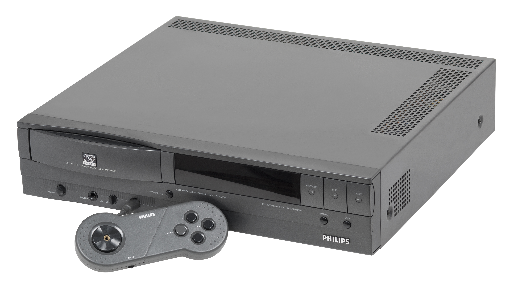
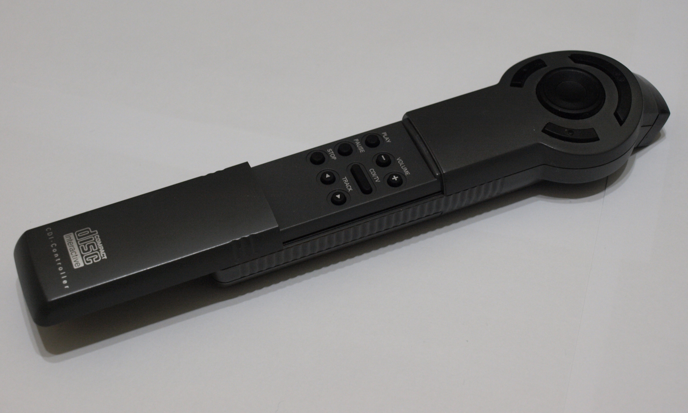
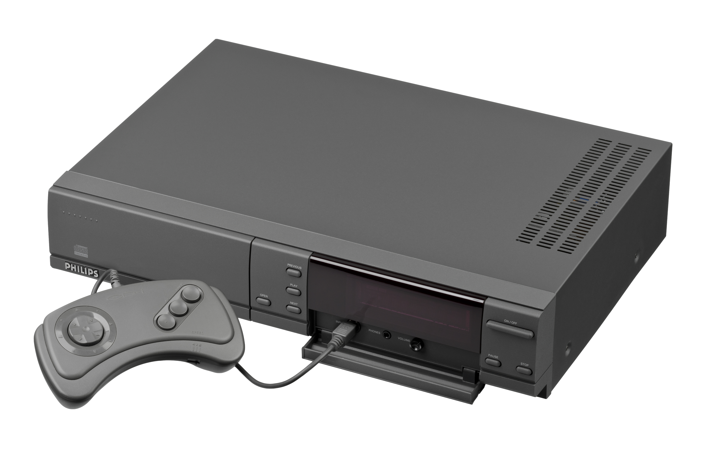
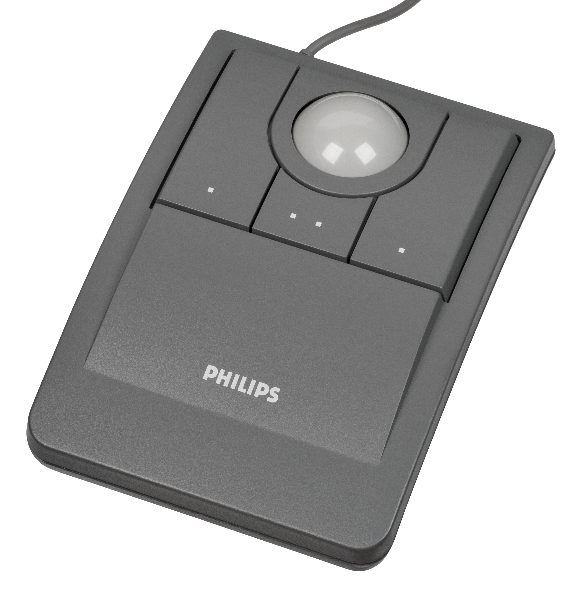

Philips CD-i
The living-room computer you operate like a TV — a remote with a thumb-trackball for a mouse

Overview
The CD-i (Compact Disc Interactive) was Philips' consumer interactive multimedia system: a compact disc player with a 16/32-bit Signetics SCC68070 processor, a dedicated graphics chip, 1MB of RAM, and the Green Book CD-i disc format co-developed with Sony. Development began in 1984 and was publicly announced in March 1986; the first consumer players reached North America on December 3, 1991 under the Magnavox brand (the CDI 910, a rebadged Philips CDI 205), with Europe and Japan following in 1992. The system ran a cursor-driven operating system called CD-RTOS (based on Microware's OS-9), and the primary input device was an infrared remote control with a built-in thumb-operated trackball: users rolled the ball to drive a cursor around the screen and pressed action buttons to select. Philips positioned it as a non-expert appliance — "a computer for people who don't want to touch a computer" — for interactive encyclopedias, museum tours, karaoke, education, and later games.
Philips invested enormously in CD-i — contemporary coverage and later histories report figures on the order of a billion dollars, much of it spent on content. By late 1994 Philips claimed roughly 570,000 players worldwide; US sales reached about 400,000 by 1996, and the format was abandoned in the US that year and discontinued entirely in 1998. Analysts and rivals were brutal: Bill Gates called it "a terrible game machine, and it was a terrible PC." Its strangest legacy comes from console politics: after Nintendo broke its SNES CD-ROM deal with Sony at CES in 1991 and signed with Philips instead — a deal that also fell apart — Philips kept the rights to Nintendo characters and produced the notorious Hotel Mario, Link: The Faces of Evil, Zelda: The Wand of Gamelon, and Zelda's Adventure. None were made by Nintendo; all were widely derided; all are now memes.
The interaction model is the museum's point of interest: the most complete attempt of the era to make the computer a living-room appliance, with the television remote — trackball and all — as the computer's pointer.
Deep dive
The CD-i's defining interface decision was to make the living-room remote the computer's pointer. The Shell 1 remote (22ER9051) carried a small thumb-operated ball; the later "CD-i Commander" (22ER9055) was pressure-sensitive, so pressing harder on the ball accelerated the cursor. Philips bundled a separate full-size wired Trackerball (22ER9013), a mouse, a Touchpad, and a gamepad for precision tasks, and co-developed a children's Roller Controller with the Children's Television Workshop. The bet was that cursor-and-click on a television, operated like an appliance, would let ordinary families drive a computer. It worked technically and failed commercially — IGN later ranked the controller family among the worst ever, precisely because the appliance model was wrong for games.
Philips fought to position interactive media as a mainstream home entertainment category: the Los Angeles Times described the machine in 1990 as "the next wave in home electronics." The content ecosystem was real and ambitious — interactive encyclopedias, museum tours, TV game-show tie-ins (Jeopardy!, Name That Tune), karaoke, education titles, Todd Rundgren's No World Order (1993, the first fully interactive music album), and later CD-Online internet access in 1995. Electronic Arts briefly ran a CD-i division before halting it, and early backer Matsushita pulled out; the machine's FMV ambitions were delayed by competition from Intel's DVI standard, pushing launch from the original 1987 target to late 1991.
After Nintendo's broken Sony deal at CES 1991, Philips acquired rights to Nintendo characters and produced the CD-i Zelda and Mario games itself. They became the most visible tombstone of the interactive-television dream — and, in Hotel Mario's case, the source of the famous cutscene line "all toasters toast toast!"
The whole future of interactive home media was attempted a decade early and at enormous cost: 570,000 players worldwide against a billion-dollar investment, US abandonment in 1996, discontinuation in 1998. The CD-i is the cautionary canon: the appliance-computer dream, tried with real hardware, real money, and real television-friendly input.
Team & pioneers
- Philips Interactive Media Systems CD-i developer; players sold under the Philips brand in Europe and Magnavox (a Philips subsidiary) in the US
- Sony Co-developed the Green Book CD-i format with Philips
- Microware Provided the OS-9 foundation for the CD-RTOS operating system
Media



Sources
- Wikipedia — CD-i
- Time Extension — Uncovering The Tragic Tale Of The Philips CD-i
- The World of CD-i — Find the best CD-i controller!
- The Centre for Computing History — Philips CD-i 205
- Los Angeles Times (June 5, 1990) — Audiovisual Device: The Next Wave in Home Electronics?
- The New York Times (April 2, 1992) — Company News; New Philips CD